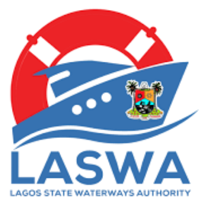
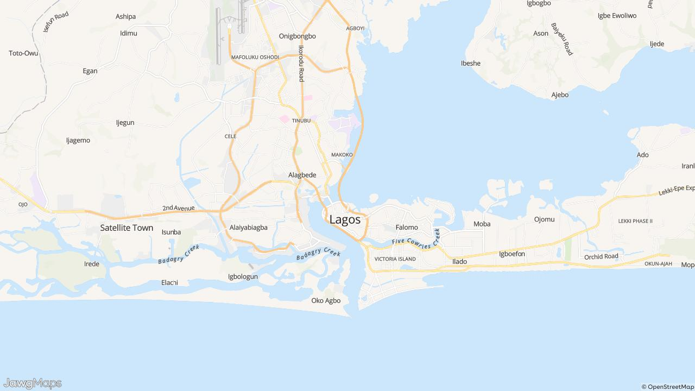

<!-- @dsCard group="Lagos Ferry Map" viewport="1280x760" name="Ferry product" subtitle="Click-through recreation — home, map, directory, about" -->
<!-- @startingPoint section="Lagos Ferry Map" subtitle="Product screens — click-through" viewport="1280x760" -->
<!doctype html>
<html lang="en">
<head>
<meta charset="utf-8">
<meta name="viewport" content="width=device-width, initial-scale=1">
<title>Lagos Ferry Map — UI kit</title>
<link rel="stylesheet" href="../../styles.css">
<script src="https://unpkg.com/react@18/umd/react.production.min.js"></script>
<script src="https://unpkg.com/react-dom@18/umd/react-dom.production.min.js"></script>
<script src="https://unpkg.com/@babel/standalone@7.26.4/babel.min.js"></script>
<style>
  * { box-sizing: border-box; }
  body { margin: 0; }
  .pill { display: inline-flex; align-items: center; gap: 6px; padding: 10px 20px;
          border-radius: var(--shape-control); border: none; cursor: pointer;
          font-family: var(--font-sans); font-weight: 600; letter-spacing: var(--tracking-label);
          background: var(--color-action); color: var(--color-on-action);
          text-decoration: none; transition: background-color 200ms; }
  .pill:hover { background: var(--color-action-hover); color: #fff; }
  .navpill { padding: 8px 16px; border-radius: var(--shape-control); font-size: 14px;
             font-weight: 700; letter-spacing: var(--tracking-label); text-decoration: none;
             color: var(--color-on-nav); background: none; border: none; cursor: pointer;
             font-family: var(--font-sans); transition: color 200ms, background-color 200ms; }
  .navpill:hover, .navpill[data-active="true"] { color: var(--color-primary);
             background: var(--state-hover-primary); }
  .ctacard { display: flex; flex-direction: column; align-items: center; text-align: center;
             gap: 16px; background: var(--color-surface-raised); border-radius: var(--radius-md-xl);
             padding: 32px; box-shadow: var(--shadow-elevation-1); text-decoration: none;
             border: none; cursor: pointer; font-family: var(--font-sans);
             transition: box-shadow 200ms; }
  .ctacard:hover { box-shadow: var(--shadow-elevation-2); }
  .ctacard h3 { width: 240px; max-width: 100%; margin: 0; font-size: 16px; font-weight: 600;
                line-height: 24px; color: #fff; background: var(--color-action);
                border-radius: var(--shape-control); padding: 10px 20px; transition: background-color 200ms; }
  .ctacard:hover h3 { background: var(--color-action-hover); }
  .ctacard p { margin: 0; font-size: 14px; line-height: 20px;
               color: var(--color-on-surface-variant); text-wrap: pretty; }
  .prose { max-width: var(--container-prose); margin: 0 auto; padding: 64px 16px; }
  .h1 { margin: 0 0 12px; font-size: 32px; font-weight: 400; line-height: 40px;
        color: var(--color-on-surface); }
  .h2 { margin: 0 0 16px; font-size: 28px; font-weight: 400; line-height: 36px;
        color: var(--color-on-surface); }
  .body { font-size: 16px; line-height: 24px; color: var(--color-on-surface-variant);
          text-wrap: pretty; }
  a.link { color: var(--color-link); text-decoration: underline; text-underline-offset: 2px; }
  table { width: 100%; border-collapse: collapse; font-size: 14px; }
  thead th { position: sticky; top: 0; z-index: 10; text-align: left; padding: 12px 16px;
             font-size: 12px; font-weight: 500; text-transform: uppercase;
             letter-spacing: var(--tracking-overline); color: var(--color-on-surface-variant);
             background: var(--color-surface-variant);
             border-bottom: 1px solid var(--color-outline-variant); white-space: nowrap; }
  tbody tr { background: var(--color-surface); cursor: pointer;
             border-top: 1px solid color-mix(in srgb, var(--color-outline-variant) 60%, transparent);
             transition: background-color 200ms; }
  tbody tr:hover { background: var(--state-hover-row); }
  tbody td { padding: 12px 16px; vertical-align: top; color: var(--color-on-surface-variant); }
  .chip { display: inline-block; padding: 2px 8px; border-radius: var(--radius-full);
          font-size: 12px; background: var(--color-surface-variant);
          color: var(--color-on-surface-variant); }
  .filterin { margin-top: 6px; width: 100%; background: transparent; border: none;
              border-bottom: 1px solid var(--color-outline-variant); padding-bottom: 2px;
              outline: none; font-family: var(--font-sans); font-size: 14px;
              color: var(--color-on-surface); }
  .filterin:focus { border-bottom-color: var(--color-primary); }
</style>
</head>
<body data-theme="ferry">
<div id="root"></div>
<script type="text/babel" data-presets="react">
const { useState } = React;

const NAV = [
  { id: 'about', label: 'About' },
  { id: 'map', label: 'Map' },
  { id: 'directory', label: 'Directory' },
];

/* Seven facilities and five routes stand in for the full GTFS dataset. */
const FACILITIES = [
  { id: 'f1', name: 'Ikorodu Ferry Terminal', lga: 'Ikorodu', type: 'Ferry Terminal',
    quality: 'Developed', dest: ['Falomo', 'Five Cowrie Creek', 'Marina'] },
  { id: 'f2', name: 'Marina Ferry Terminal', lga: 'Lagos Island', type: 'Ferry Terminal',
    quality: 'Developed', dest: ['Ikorodu', 'Apapa', 'Ebute Ero'] },
  { id: 'f3', name: 'Ijede Jetty', lga: 'Ikorodu', type: 'Jetty',
    quality: 'Less developed', dest: ['Ikorodu', 'Baiyeku'] },
  { id: 'f4', name: 'Five Cowrie Creek Terminal', lga: 'Eti-Osa', type: 'Ferry Terminal',
    quality: 'Developed', dest: ['Marina', 'Falomo'] },
  { id: 'f5', name: 'Baiyeku Boat Landing', lga: 'Ikorodu', type: 'Boat Landing',
    quality: 'Less developed', dest: ['Ijede', 'Badore'] },
  { id: 'f6', name: 'Takwa Bay Landing', lga: 'Eti-Osa', type: 'Boat Landing',
    quality: 'Less developed', status: 'charter' },
  { id: 'f7', name: 'Badore Ferry Terminal', lga: 'Eti-Osa', type: 'Ferry Terminal',
    quality: 'Developed', status: 'planned' },
];

const ROUTES = [
  { id: 'r1', origin: 'Ikorodu', dest: 'Falomo', operator: 'LagFerry' },
  { id: 'r2', origin: 'Marina', dest: 'Apapa', operator: 'LagFerry' },
  { id: 'r3', origin: 'Ijede', dest: 'Baiyeku',
    operator: 'Private operators: informal, no fixed timetable — departures fill on demand' },
  { id: 'r4', origin: 'Five Cowrie Creek', dest: 'Marina', operator: 'Texas Connection Ferries' },
  { id: 'r5', origin: 'Badore', dest: 'Ijede',
    operator: 'OMI EKO: tentatively proposed under the Lagos State expansion programme' },
];

/* Lucide is the system's only icon family — stroke, 2px, currentColor.
   The Material sets this kit used (filled chrome + outlined editorial) are
   retired; each name below maps to its closest Lucide glyph. */
const L = {
  info: ['M12 2a10 10 0 1 0 0 20 10 10 0 0 0 0-20Z', 'M12 16v-4', 'M12 8h.01'],
  map: ['M9 3 3.4 4.9v15.6L9 18.6l6 2.4 5.6-1.9V3.5L15 5.4 9 3Z', 'M9 3v15.6', 'M15 5.4V21'],
  directions: ['M6 19a3 3 0 1 0 0-6 3 3 0 0 0 0 6Z', 'M18 11a3 3 0 1 0 0-6 3 3 0 0 0 0 6Z', 'M9 19h8.5a3.5 3.5 0 0 0 0-7h-11a3.5 3.5 0 0 1 0-7H15'],
  warning: ['M12 9v4', 'M12 17h.01', 'M10.29 3.86 1.82 18a2 2 0 0 0 1.71 3h16.94a2 2 0 0 0 1.71-3L13.71 3.86a2 2 0 0 0-3.42 0Z'],
  close: ['M18 6 6 18', 'M6 6l12 12'],
  chevron: ['M6 9l6 6 6-6'],
  filter: ['M22 3H2l8 9.46V19l4 2v-8.54L22 3Z'],
  myLocation: ['M2 12h3', 'M19 12h3', 'M12 2v3', 'M12 19v3', 'M12 5a7 7 0 1 0 0 14 7 7 0 0 0 0-14Z', 'M12 10a2 2 0 1 0 0 4 2 2 0 0 0 0-4Z'],
  lightbulb: ['M15 14c.2-1 .7-1.7 1.5-2.5 1-.9 1.5-2.2 1.5-3.5a6 6 0 0 0-12 0c0 1.3.5 2.6 1.5 3.5.8.8 1.3 1.5 1.5 2.5', 'M9 18h6', 'M10 22h4'],
  boat: ['M2 21c.6.5 1.2 1 2.5 1 2.5 0 2.5-2 5-2 2.5 0 2.5 2 5 2 1.3 0 1.9-.5 2.5-1', 'M19.4 20A11.6 11.6 0 0 0 21 14l-9-4-9 4c0 2.9.9 5.3 2.8 7.8', 'M19 13V7a2 2 0 0 0-2-2H7a2 2 0 0 0-2 2v6', 'M12 10V4', 'M8 4h8'],
  security: ['M20 13c0 5-3.5 7.5-7.7 9a1 1 0 0 1-.7 0C7.5 20.5 4 18 4 13V6a1 1 0 0 1 1-1c2 0 4.5-1.2 6.2-2.7a1.2 1.2 0 0 1 1.5 0C14.5 3.8 17 5 19 5a1 1 0 0 1 1 1Z', 'M9 12l2 2 4-4'],
};
const Icon = ({ name, size = 24, style }) => (
  <svg viewBox="0 0 24 24" width={size} height={size} fill="none" stroke="currentColor"
       strokeWidth="2" strokeLinecap="round" strokeLinejoin="round" aria-hidden
       style={{ display: 'block', flexShrink: 0, ...style }}>
    {L[name].map((d, i) => <path key={i} d={d} />)}
  </svg>
);

const ABOUT_ITEMS = [
  { title: 'Limitations', icon: 'warning', body: [
    'Private, informal transit operations are always subject to change. This information was collected in February 2026 and updates will be published on a quarterly basis.',
    "If you see anything that's missing or incorrect, please let us know.",
  ] },
  { title: 'Context and Motivation', icon: 'lightbulb', body: [
    'This is the first-ever comprehensive map of private and public ferries in Lagos.',
    'In Lagos, a city ranked among the worst in the world for road congestion, ferries are an underutilised and poorly understood transportation alternative. Part of the problem is the lack of information; private, informal ferries have no public documentation, and people only learn about them through word-of-mouth.',
  ] },
  { title: 'About the Ferries', icon: 'boat', body: [
    'The Lagos State government runs a ferry service called LagFerry, which has been actively expanding and improving over the decades. The majority of routes, however, operate through private, informal operators.',
    'Lagos offers varied ferry infrastructure: from modern ferry terminals with air-conditioned waiting rooms and other amenities, to undeveloped landings where boats pull up on sand banks on the shoreline.',
  ] },
  { title: 'Government Oversight and Safety', icon: 'security', body: [
    'In Lagos, passenger ferry transportation is overseen by both national and state agencies to ensure safety and regulatory compliance.',
    "At the national level, NIWA — the National Inland Waterways Authority — sets safety standards for vessels, approves and monitors ferry operations, and sanctions illegal activities on the waterways.",
    'At the state level, LASWA — the Lagos State Waterways Authority — manages and regulates water transportation. All passenger vessels must be registered with LASWA and are required to provide lifejackets for passengers.',
  ] },
  { title: 'Data and Mapping Process', icon: 'map', body: [
    'It was produced through a combination of data extraction from online sources and field data collection, focused on the Lagos metropolitan area.',
  ] },
];

/* ── Chrome ── */
function AppBar({ page, go }) {
  return (
    <header style={{ position: 'sticky', top: 0, zIndex: 5000, background: 'var(--color-nav)',
             boxShadow: 'var(--shadow-elevation-2)' }}>
      <nav style={{ height: 64, padding: '0 16px', display: 'flex', alignItems: 'center',
             justifyContent: 'space-between' }}>
        <button onClick={() => go('home')} style={{ border: 'none', background: 'none',
               cursor: 'pointer', padding: 0, color: 'var(--color-on-nav)',
               fontFamily: 'var(--font-sans)', fontWeight: 700, fontSize: 22, lineHeight: '28px',
               letterSpacing: 'var(--tracking-tight)' }}>Lagos Ferry Map</button>
        <div style={{ display: 'flex', gap: 4 }}>
          {NAV.map((n) => (
            <button key={n.id} className="navpill" data-active={page === n.id}
                    onClick={() => go(n.id)}>{n.label}</button>
          ))}
        </div>
      </nav>
    </header>
  );
}

function Footer() {
  const links = ['About', 'Interactive Map', 'Navigation Partnerships', 'Directory', 'Sitemap', 'Robots', 'Report Issue'];
  return (
    <footer style={{ background: 'var(--color-footer)', color: 'var(--color-on-footer-variant)',
             fontFamily: 'var(--font-sans)' }}>
      <div style={{ textAlign: 'center', padding: 16, marginBottom: 32,
             background: 'var(--color-footer-deep)', fontSize: 14 }}>
        A project from Public Tech Studio.{' '}
        <a href="https://publictech.studio" target="_blank" rel="noopener noreferrer"
           style={{ color: 'var(--color-on-footer)', textDecoration: 'underline',
                    textUnderlineOffset: 2 }}>Want to build something great?</a>
      </div>
      <div style={{ maxWidth: 'var(--container-wide)', margin: '0 auto', padding: '16px 20px',
             display: 'flex', flexWrap: 'wrap', justifyContent: 'space-between', gap: 32 }}>
        <div>
          <p style={{ margin: '0 0 8px', color: 'var(--color-on-footer)', fontWeight: 500,
                 fontSize: 16 }}>Lagos Ferry Map</p>
          <p style={{ margin: 0, maxWidth: 512, fontSize: 14, lineHeight: 1.625,
                 color: 'var(--color-on-footer-muted)' }}>
            The first comprehensive map of all ferry services in Lagos, Nigeria.
          </p>
        </div>
        <nav aria-label="Footer navigation">
          <ul style={{ display: 'grid', gridTemplateColumns: '1fr 1fr', columnGap: 16,
                 listStyle: 'none', margin: 0, padding: 0 }}>
            {links.map((l) => (
              <li key={l}>
                <a href="#" style={{ display: 'block', padding: '4px 0', fontSize: 14,
                       fontWeight: 500, letterSpacing: 'var(--tracking-label)',
                       textDecoration: 'none', color: 'var(--color-on-footer-variant)' }}>{l}</a>
              </li>
            ))}
          </ul>
        </nav>
      </div>
      <div style={{ maxWidth: 'var(--container-wide)', margin: '32px auto', padding: '24px 20px 32px',
             borderTop: '1px solid var(--color-footer-hairline)', fontSize: 14,
             color: 'var(--color-on-footer-muted)' }}>© 2026 Public Tech Studio</div>
    </footer>
  );
}

/* ── Home ── */
function Home({ go }) {
  const cards = [
    { icon: 'map', title: 'View map of all routes', to: 'map',
      body: 'Explore the first comprehensive interactive map, showing all ferry routes, jetties, schedules, and prices.' },
    { icon: 'directions', title: 'Navigate from A to B', to: 'map',
      body: 'Get step-by-step directions, including bus connections. We have partnered with several popular navigation apps.' },
    { icon: 'info', title: 'Learn about the ferries', to: 'about',
      body: 'Discover the different types of ferry services, safety information, and how the ferry system works in Lagos.' },
  ];
  return (
    <>
      <section style={{ overflow: 'hidden' }}>
        <div style={{ position: 'relative', display: 'flex', height: 400 }}>
          {['hero-traffic', 'hero-ferry'].map((img) => (
            <div key={img} style={{ flex: 1, position: 'relative' }}>
              
              <div style={{ position: 'absolute', inset: 0, background: 'var(--color-scrim-photo)' }} />
            </div>
          ))}
          <div style={{ position: 'absolute', inset: 0, display: 'flex', flexDirection: 'column',
                 alignItems: 'center', justifyContent: 'center', textAlign: 'center',
                 padding: '0 16px', gap: 24 }}>
            <span style={{ display: 'inline-block', animation: 'var(--animate-ferry-sail)',
                   userSelect: 'none' }}>
              
            </span>
            <h1 style={{ margin: 0, fontSize: 45, fontWeight: 400, lineHeight: '52px',
                   color: '#fff', maxWidth: 900 }}>Avoid Lagos traffic by taking the ferry.</h1>
            <p style={{ margin: 0, fontSize: 16, lineHeight: '24px',
                   color: 'rgba(255,255,255,0.8)', maxWidth: 576 }}>
              The waterways remain an underutilised way to navigate the city, partly due to a lack
              of public information. We're changing that.
            </p>
          </div>
        </div>

        <div style={{ background: 'var(--color-primary)' }}>
          <div style={{ maxWidth: 1400, margin: '0 auto', padding: '60px 80px',
                 display: 'grid', gridTemplateColumns: 'repeat(auto-fit, minmax(260px, 1fr))',
                 gap: 32 }}>
            {cards.map((c) => (
              <button key={c.title} className="ctacard" onClick={() => go(c.to)}>
                <span style={{ color: 'var(--color-primary)' }}><Icon name={c.icon} size={48} /></span>
                <h3>{c.title}</h3>
                <p>{c.body}</p>
              </button>
            ))}
          </div>
        </div>
      </section>

      <section className="prose">
        <h2 className="h2">The first comprehensive ferry map for Lagos</h2>
        <p className="body" style={{ marginTop: 0, marginBottom: 20 }}>
          The Lagos metropolitan area has an extensive network of ferry terminals and water
          transport routes that most residents don't know about. Lagos Ferry Map brings together
          every terminal, route, schedule, and fare into one free, open resource.
        </p>
        <p className="body" style={{ margin: 0 }}>
          Whether you commute daily or are visiting Lagos for the first time, this site gives you
          the tools to beat the traffic and navigate the city's waterways with confidence.
        </p>
      </section>

      <section style={{ background: 'color-mix(in srgb, var(--color-primary) 10%, transparent)' }}>
        <div style={{ maxWidth: 'var(--container-prose)', margin: '0 auto', padding: '48px 16px' }}>
          <h2 className="h2">Who's behind the map?</h2>
          
          <p className="body" style={{ marginTop: 0, marginBottom: 12 }}>
            <a className="link" href="https://www.publictech.studio/">Public Tech Studio</a> launched
            this project in 2025 to educate Lagos commuters about the availability and advantages of
            ferry transportation, aiming to reduce road congestion and promote more robust
            multi-modal public transit.
          </p>
          
          <p className="body" style={{ margin: 0 }}>
            Through a new partnership, the{' '}
            <a className="link" href="https://lagoswaterways.com/">Lagos State Waterways Authority</a>{' '}
            is also contributing data on ferry operations at the facilities under their oversight.
          </p>
        </div>
      </section>
    </>
  );
}

/* ── Map ── */
const LEGEND = [
  ['Developed', 'var(--map-marker-developed)', 'dot'],
  ['Less developed', 'var(--map-marker-less-developed)', 'dot'],
  ['Charter only', 'var(--map-marker-charter-only)', 'dot'],
  ['LagFerry route', 'var(--map-route-lagferry)', 'line'],
  ['Commercial route', 'var(--map-route-commercial)', 'line'],
  ['Planned OMI EKO', 'var(--map-route-planned)', 'dash'],
];

function MapScreen() {
  const [selected, setSelected] = useState(null);
  const [query, setQuery] = useState('');
  const visible = FACILITIES.filter((f) =>
    (f.name + f.lga).toLowerCase().includes(query.toLowerCase()));

  return (
    <section style={{ display: 'flex', height: 'calc(100vh - 64px)', minHeight: 560 }}>
      <div style={{ position: 'relative', flex: 1, minWidth: 0, overflow: 'hidden' }}>
        

        <button style={{ position: 'absolute', top: 12, right: 52, zIndex: 900, width: 40,
               height: 40, background: 'var(--color-surface)', borderRadius: 'var(--radius-md-md)',
               boxShadow: 'var(--shadow-elevation-2)', border: 'none', cursor: 'pointer',
               display: 'flex', alignItems: 'center', justifyContent: 'center',
               color: 'var(--color-on-surface-variant)' }} title="Show my location">
          <Icon name="myLocation" size={20} />
        </button>

        {!selected && (
          <div style={{ position: 'absolute', top: 12, left: 12, zIndex: 900, width: 300,
                 maxWidth: 'calc(100% - 24px)', background: 'var(--color-surface)',
                 borderRadius: 'var(--radius-md-lg)', boxShadow: 'var(--shadow-elevation-2)',
                 overflow: 'hidden' }}>
            <div style={{ padding: 12 }}>
              <input value={query} onChange={(e) => setQuery(e.target.value)}
                     placeholder="Search facility or address…"
                     style={{ width: '100%', padding: '8px 12px', fontFamily: 'var(--font-sans)',
                              fontSize: 14, border: '1px solid var(--color-outline-variant)',
                              borderRadius: 'var(--shape-control)', outline: 'none',
                              background: 'var(--color-surface-raised)',
                              color: 'var(--color-on-surface)' }} />
            </div>
            <div style={{ maxHeight: 220, overflowY: 'auto' }}>
              {visible.map((f) => (
                <button key={f.id} onClick={() => setSelected(f)}
                        style={{ display: 'block', width: '100%', textAlign: 'left',
                                 padding: '10px 16px', border: 'none', cursor: 'pointer',
                                 background: 'transparent', fontFamily: 'var(--font-sans)',
                                 borderTop: '1px solid color-mix(in srgb, var(--color-outline-variant) 60%, transparent)' }}>
                  <span style={{ display: 'block', fontSize: 14, fontWeight: 500,
                         color: 'var(--color-on-surface)' }}>{f.name}</span>
                  <span style={{ display: 'block', fontSize: 12,
                         color: 'var(--color-on-surface-variant)' }}>{f.lga} · {f.type}</span>
                </button>
              ))}
              {visible.length === 0 && (
                <div style={{ padding: '20px 16px', textAlign: 'center', fontSize: 14,
                       color: 'var(--color-on-surface-variant)' }}>
                  No facilities match the current filters.
                </div>
              )}
            </div>
            <div style={{ padding: 12, borderTop: '1px solid var(--color-outline-variant)',
                   display: 'flex', flexDirection: 'column', gap: 7 }}>
              {LEGEND.map(([label, color, shape]) => (
                <span key={label} style={{ display: 'flex', alignItems: 'center', gap: 10,
                       fontSize: 12, color: 'var(--color-on-surface)' }}>
                  {shape === 'dot'
                    ? <svg width="16" height="16"><circle cx="8" cy="8" r="5.5" fill={color}
                        fillOpacity="0.8" stroke="#fff" strokeWidth="1.5" /></svg>
                    : <svg width="16" height="16"><line x1="0" y1="8" x2="16" y2="8" stroke={color}
                        strokeWidth="3" strokeLinecap="round"
                        strokeDasharray={shape === 'dash' ? '4 3' : undefined} /></svg>}
                  {label}
                </span>
              ))}
            </div>
          </div>
        )}
      </div>

      {selected && (
        <div style={{ width: '50%', maxWidth: 560, display: 'flex', flexDirection: 'column',
               background: 'var(--color-surface)', borderLeft: '1px solid var(--color-outline-variant)',
               overflow: 'hidden' }}>
          <div style={{ display: 'flex', justifyContent: 'center', padding: '10px 0 4px' }}>
            <div style={{ width: 32, height: 4, borderRadius: 'var(--radius-full)',
                   background: 'color-mix(in srgb, var(--color-on-surface-variant) 30%, transparent)' }} />
          </div>
          <div style={{ display: 'flex', alignItems: 'center', justifyContent: 'space-between',
                 padding: '16px 16px 4px' }}>
            <span style={{ display: 'flex', alignItems: 'center', gap: 6, fontSize: 14,
                   color: 'var(--color-on-surface-variant)' }}>
              <Icon name="map" size={16} />Ferry facility
            </span>
            <span style={{ display: 'flex', alignItems: 'center', gap: 4 }}>
              <a className="pill" href="#" style={{ fontSize: 12, padding: '8px 16px' }}>
                <Icon name="warning" size={15} />Report a data issue
              </a>
              <button onClick={() => setSelected(null)} aria-label="Close"
                      style={{ width: 32, height: 32, display: 'flex', alignItems: 'center',
                               justifyContent: 'center', borderRadius: 'var(--radius-full)',
                               border: 'none', background: 'transparent', cursor: 'pointer',
                               color: 'var(--color-on-surface-variant)' }}>
                <Icon name="close" size={18} />
              </button>
            </span>
          </div>

          <div style={{ overflowY: 'auto', padding: '12px 16px 24px' }}>
            <h2 style={{ margin: '0 0 4px', fontSize: 22, fontWeight: 400, lineHeight: '28px',
                   color: 'var(--color-on-surface)' }}>{selected.name}</h2>
            <p style={{ margin: '0 0 16px', fontSize: 14,
                   color: 'var(--color-on-surface-variant)' }}>
              {selected.lga} · {selected.type}
            </p>

            <div style={{ display: 'flex', alignItems: 'center', gap: 8, marginBottom: 20 }}>
              <span style={{ width: 12, height: 12, borderRadius: '50%',
                     background: selected.quality === 'Less developed'
                       ? 'var(--map-marker-less-developed)' : 'var(--map-marker-developed)' }} />
              <span style={{ fontSize: 14, color: 'var(--color-on-surface)' }}>{selected.quality}</span>
            </div>

            {selected.status === 'charter' && (
              <span style={{ display: 'inline-flex', padding: '2px 8px',
                     borderRadius: 'var(--radius-full)', fontSize: 12, fontWeight: 700,
                     background: 'color-mix(in srgb, var(--color-status-charter) 15%, transparent)',
                     color: 'var(--color-status-charter)' }}>Charter Only</span>
            )}
            {selected.status === 'planned' && (
              <span style={{ display: 'inline-flex', padding: '2px 8px',
                     borderRadius: 'var(--radius-full)', fontSize: 12, fontWeight: 700,
                     background: 'color-mix(in srgb, var(--color-status-planned) 15%, transparent)',
                     color: 'var(--color-status-planned)' }}>Future OMI EKO</span>
            )}

            {selected.dest && (
              <>
                <p style={{ margin: '0 0 8px', fontSize: 12, fontWeight: 500,
                       textTransform: 'uppercase', letterSpacing: 'var(--tracking-overline)',
                       color: 'var(--color-on-surface-variant)' }}>Destinations</p>
                <div style={{ display: 'flex', flexWrap: 'wrap', gap: 4, marginBottom: 20 }}>
                  {selected.dest.map((d) => <span key={d} className="chip">{d}</span>)}
                </div>
              </>
            )}

            <div style={{ borderRadius: 'var(--radius-md-lg)',
                   border: '1px solid var(--color-outline-variant)', overflow: 'hidden' }}>
              <table>
                <thead><tr><th>Route</th><th>Operator</th></tr></thead>
                <tbody>
                  {ROUTES.slice(0, 3).map((r) => (
                    <tr key={r.id}>
                      <td style={{ color: 'var(--color-on-surface)', whiteSpace: 'nowrap' }}>
                        {r.origin} → {r.dest}
                      </td>
                      <td>{r.operator.split(':')[0]}</td>
                    </tr>
                  ))}
                </tbody>
              </table>
            </div>
          </div>
        </div>
      )}
    </section>
  );
}

/* ── Directory ── */
function FilterTh({ label, value, onChange }) {
  const [open, setOpen] = useState(false);
  return (
    <th>
      <div style={{ display: 'flex', alignItems: 'center', gap: 6 }}>
        <span>{label}</span>
        <button onClick={() => setOpen(!open)} aria-label={`Filter by ${label}`}
                style={{ display: 'flex', padding: 2, borderRadius: 'var(--radius-md-sm)',
                         border: 'none', background: 'transparent', cursor: 'pointer',
                         color: value ? 'var(--color-primary)'
                           : 'color-mix(in srgb, var(--color-on-surface-variant) 50%, transparent)' }}>
          <Icon name="filter" size={14} />
        </button>
      </div>
      {open && (
        <input autoFocus className="filterin" value={value} placeholder="Filter…"
               onChange={(e) => onChange(e.target.value)} />
      )}
    </th>
  );
}

function Directory() {
  const [f, setF] = useState({ lga: '', name: '', type: '', dest: '' });
  const set = (k) => (v) => setF((p) => ({ ...p, [k]: v }));
  const destText = (x) => x.status === 'charter' ? 'Charter Only'
    : x.status === 'planned' ? 'Future OMI EKO' : (x.dest || []).join(' ');

  const rows = FACILITIES.filter((x) =>
    x.lga.toLowerCase().includes(f.lga.toLowerCase()) &&
    x.name.toLowerCase().includes(f.name.toLowerCase()) &&
    x.type.toLowerCase().includes(f.type.toLowerCase()) &&
    destText(x).toLowerCase().includes(f.dest.toLowerCase()));

  const stats = [
    [FACILITIES.length, 'facilities'],
    [ROUTES.length, 'active routes'],
    [new Set(FACILITIES.map((x) => x.lga)).size, 'LGAs'],
  ];

  return (
    <section style={{ maxWidth: 'var(--container-directory)', margin: '0 auto', padding: '40px 16px' }}>
      <h1 className="h1">Lagos Ferry Terminals &amp; Routes</h1>
      <p className="body" style={{ marginTop: 0, marginBottom: 16, maxWidth: 672 }}>
        Directory of all active ferry terminals in Lagos, Nigeria — with route connections and
        facility details. Use this guide to plan ferry journeys across Lagos Lagoon.
      </p>

      <div style={{ display: 'flex', alignItems: 'center', gap: 8, flexWrap: 'wrap',
             marginBottom: 40, fontSize: 14, color: 'var(--color-on-surface-variant)' }}>
        {stats.map(([v, l], i) => (
          <React.Fragment key={l}>
            {i > 0 && <span style={{ margin: '0 4px', color: 'var(--color-outline-variant)' }}>·</span>}
            <span style={{ fontWeight: 500, color: 'var(--color-on-surface)' }}>{v}</span>
            <span>{l}</span>
          </React.Fragment>
        ))}
      </div>

      <div style={{ marginBottom: 48 }}>
        <h2 style={{ margin: '0 0 8px', fontSize: 20, fontWeight: 500,
               color: 'var(--color-on-surface)' }}>Facilities</h2>
        <p style={{ margin: '0 0 8px', fontSize: 12, lineHeight: '24px',
               color: 'var(--color-on-surface-variant)' }}>
          Click on a facility to see full details
        </p>
        <div style={{ borderRadius: 'var(--radius-md-lg)',
               border: '1px solid var(--color-outline-variant)', overflow: 'hidden' }}>
          <table>
            <thead><tr>
              <FilterTh label="LGA" value={f.lga} onChange={set('lga')} />
              <FilterTh label="Facility Name" value={f.name} onChange={set('name')} />
              <FilterTh label="Facility Type" value={f.type} onChange={set('type')} />
              <FilterTh label="Destinations" value={f.dest} onChange={set('dest')} />
            </tr></thead>
            <tbody>
              {rows.map((x) => (
                <tr key={x.id}>
                  <td style={{ whiteSpace: 'nowrap' }}>{x.lga}</td>
                  <td style={{ fontWeight: 500, color: 'var(--color-on-surface)' }}>{x.name}</td>
                  <td style={{ whiteSpace: 'nowrap' }}>{x.type}</td>
                  <td>
                    {x.status === 'charter' && (
                      <span style={{ display: 'inline-flex', padding: '2px 8px',
                             borderRadius: 'var(--radius-full)', fontSize: 12, fontWeight: 700,
                             background: 'color-mix(in srgb, var(--color-status-charter) 15%, transparent)',
                             color: 'var(--color-status-charter)' }}>Charter Only</span>
                    )}
                    {x.status === 'planned' && (
                      <span style={{ display: 'inline-flex', padding: '2px 8px',
                             borderRadius: 'var(--radius-full)', fontSize: 12, fontWeight: 700,
                             background: 'color-mix(in srgb, var(--color-status-planned) 15%, transparent)',
                             color: 'var(--color-status-planned)' }}>Future OMI EKO</span>
                    )}
                    {!x.status && (
                      <span style={{ display: 'flex', flexWrap: 'wrap', gap: 4 }}>
                        {x.dest.map((d) => <span key={d} className="chip">{d}</span>)}
                      </span>
                    )}
                  </td>
                </tr>
              ))}
              {rows.length === 0 && (
                <tr><td colSpan="4" style={{ padding: '24px 16px', textAlign: 'center',
                       opacity: 0.6 }}>No facilities match the current filters.</td></tr>
              )}
            </tbody>
          </table>
        </div>
      </div>

      <div>
        <h2 style={{ margin: '0 0 8px', fontSize: 20, fontWeight: 500,
               color: 'var(--color-on-surface)' }}>Routes</h2>
        <p style={{ margin: '0 0 8px', fontSize: 12, lineHeight: '24px',
               color: 'var(--color-on-surface-variant)' }}>
          Click on a route to see full details and schedule
        </p>
        <div style={{ borderRadius: 'var(--radius-md-lg)',
               border: '1px solid var(--color-outline-variant)', overflow: 'hidden' }}>
          <table>
            <thead><tr><th>Origin</th><th>Destination</th><th>Operator</th></tr></thead>
            <tbody>
              {ROUTES.map((r) => {
                const [before, after] = r.operator.split(':');
                return (
                  <tr key={r.id}>
                    <td style={{ color: 'var(--color-on-surface)', whiteSpace: 'nowrap' }}>{r.origin}</td>
                    <td style={{ color: 'var(--color-on-surface)', whiteSpace: 'nowrap' }}>{r.dest}</td>
                    <td>
                      <span style={{ display: 'flex', alignItems: 'center', gap: 6 }}>
                        {before.trim()}
                        {after && <span title={after.trim()} style={{ display: 'flex',
                               color: 'color-mix(in srgb, var(--color-on-surface-variant) 40%, transparent)' }}>
                          <Icon name="info" size={14} />
                        </span>}
                      </span>
                    </td>
                  </tr>
                );
              })}
            </tbody>
          </table>
        </div>
      </div>
    </section>
  );
}

/* ── About ── */
function About() {
  const [open, setOpen] = useState(0);
  return (
    <section className="prose">
      <h1 className="h1">About the Lagos Ferry Map</h1>
      <p className="body" style={{ marginTop: 0, marginBottom: 32 }}>
        <a className="link" href="https://www.publictech.studio/">Public Tech Studio</a> launched
        this project in 2025 to educate Lagos commuters about the availability and advantages of
        ferry transportation, aiming to reduce road congestion and promote more robust multi-modal
        public transit.
      </p>

      <div>
        {ABOUT_ITEMS.map((item, i) => (
          <div key={item.title} style={{ borderBottom: i === ABOUT_ITEMS.length - 1
                 ? 'none' : '1px solid var(--color-outline-variant)' }}>
            <button onClick={() => setOpen(open === i ? -1 : i)} aria-expanded={open === i}
                    style={{ width: '100%', display: 'flex', alignItems: 'center',
                             justifyContent: 'space-between', gap: 16, padding: '20px 0',
                             border: 'none', background: 'transparent', textAlign: 'left',
                             cursor: 'pointer', fontFamily: 'var(--font-sans)',
                             color: 'var(--color-on-surface)' }}>
              <span style={{ display: 'flex', alignItems: 'center', gap: 12, fontSize: 20,
                     fontWeight: 400, lineHeight: '28px' }}>
                <span style={{ color: 'var(--color-primary)', display: 'flex' }}>
                  <Icon name={item.icon} size={24} />
                </span>
                {item.title}
              </span>
              <Icon name="chevron" size={24}
                    style={{ transform: open === i ? 'rotate(180deg)' : 'none',
                             transition: 'transform 200ms' }} />
            </button>
            {open === i && (
              <div style={{ paddingBottom: 24, display: 'flex', flexDirection: 'column', gap: 16 }}>
                {item.body.map((p, j) => <p key={j} className="body" style={{ margin: 0 }}>{p}</p>)}
              </div>
            )}
          </div>
        ))}
      </div>
    </section>
  );
}

/* ── Shell ── */
function App() {
  const [page, setPage] = useState('home');
  const go = (p) => { setPage(p); window.scrollTo(0, 0); };
  return (
    <div style={{ minHeight: '100vh', display: 'flex', flexDirection: 'column' }}>
      <AppBar page={page} go={go} />
      <main style={{ flex: 1 }}>
        {page === 'home' && <Home go={go} />}
        {page === 'map' && <MapScreen />}
        {page === 'directory' && <Directory />}
        {page === 'about' && <About />}
      </main>
      {page !== 'map' && <Footer />}
    </div>
  );
}

ReactDOM.createRoot(document.getElementById('root')).render(<App />);
</script>
</body>
</html>
